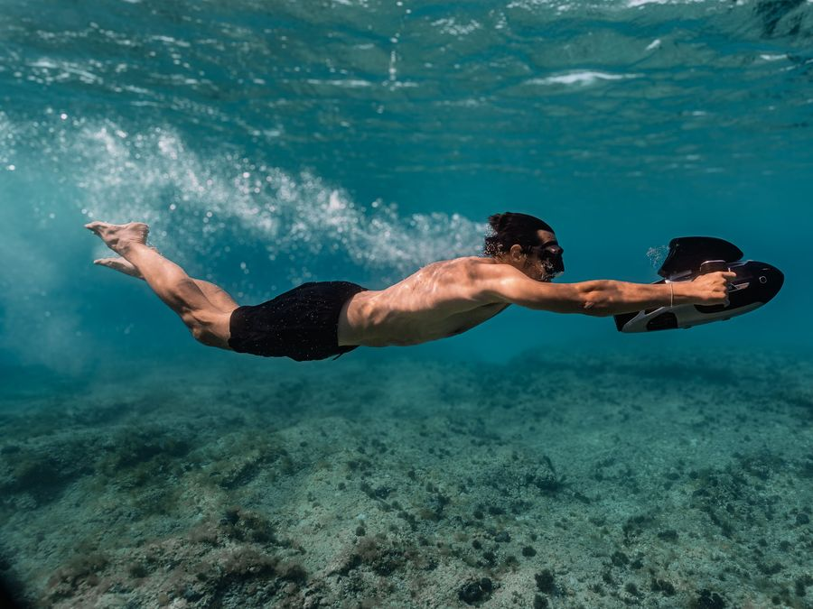
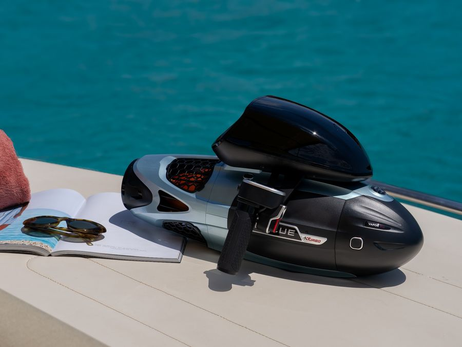
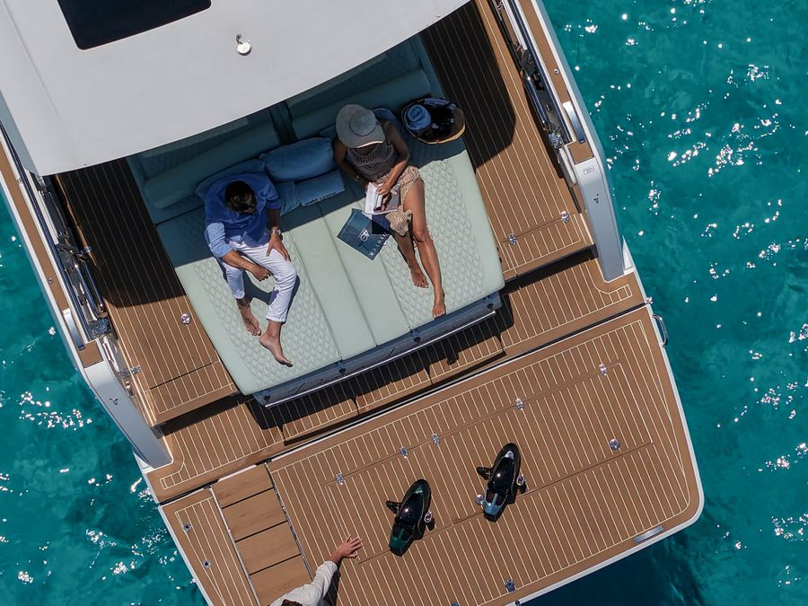
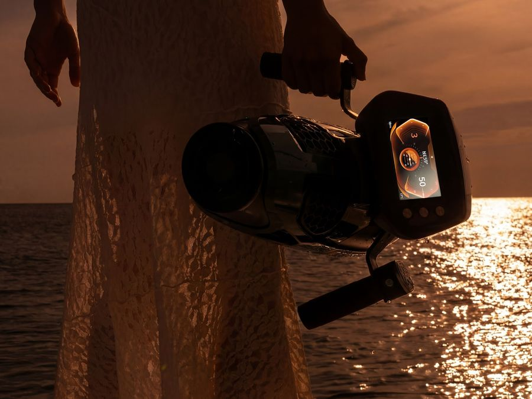
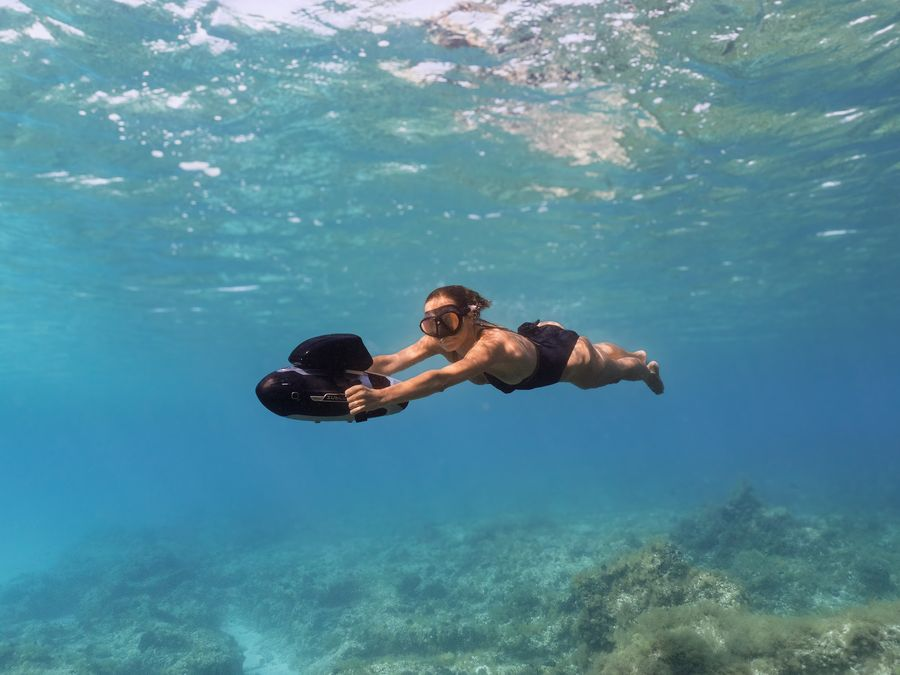
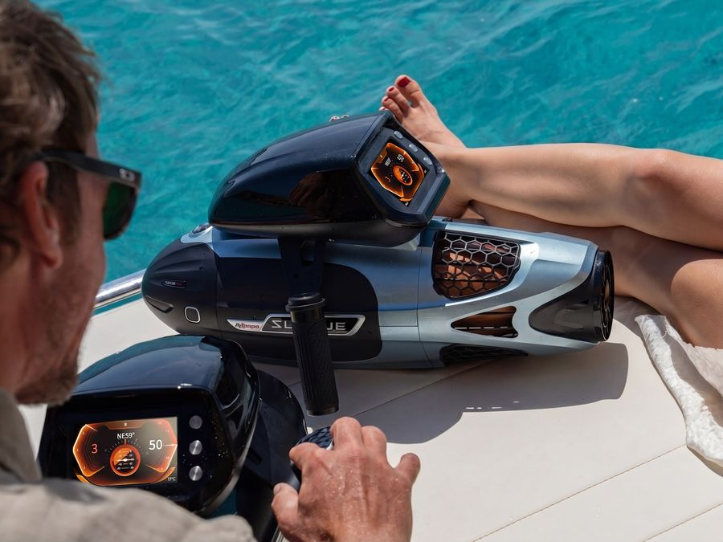

Sublue Vapor Pro
Le plus rapide et le plus endurant des scooters sous-marins Sublue. Un Vapor Pro vous attend à bord de chaque bateau Master Ski Pilou à St Barth.

Sublue, pionnier du scooter sous-marin
Sublue revendique l'invention du premier scooter sous-marin portable à deux hélices. La marque a depuis vendu plus de 150 000 appareils dans plus de 80 pays, des plongeurs loisir aux yachts qui les embarquent comme jouets nautiques.
En France, la gamme est importée, vendue et entretenue par Sublue France, sous licence Poseidon Yachting, avec un atelier SAV à Puget-sur-Argens dans le Var. C'est cette même équipe qui prépare les Vapor Pro de St Barth.
Le Vapor Pro en détail
Propulsion à jet par turbine, sans hélice apparente : on agrippe les poignées et on se laisse tirer le long des récifs. Il se prend en main en quelques minutes, sans permis.
- Deux batteries de 384,8 Wh incluses, rechargées en 1 h 30
- Autonomie : 120 min à l'allure douce, environ 28 min à pleine vitesse
- Écran OLED : profondeur, cap et température de l'eau
- Application SublueGo pour suivre ses sessions
- Les batteries ne voyagent pas en bagage : elles restent à bord, chargées et prêtes
En images





Inclus à bord, et en supplément si vous êtes nombreux
Chaque bateau Master Ski Pilou embarque un Vapor Pro. Vous pouvez en ajouter jusqu'à six pour toute la famille : ils sont chargés et prêts à l'eau dès le mouillage, à Colombier, Gouverneur ou Shell Beach.